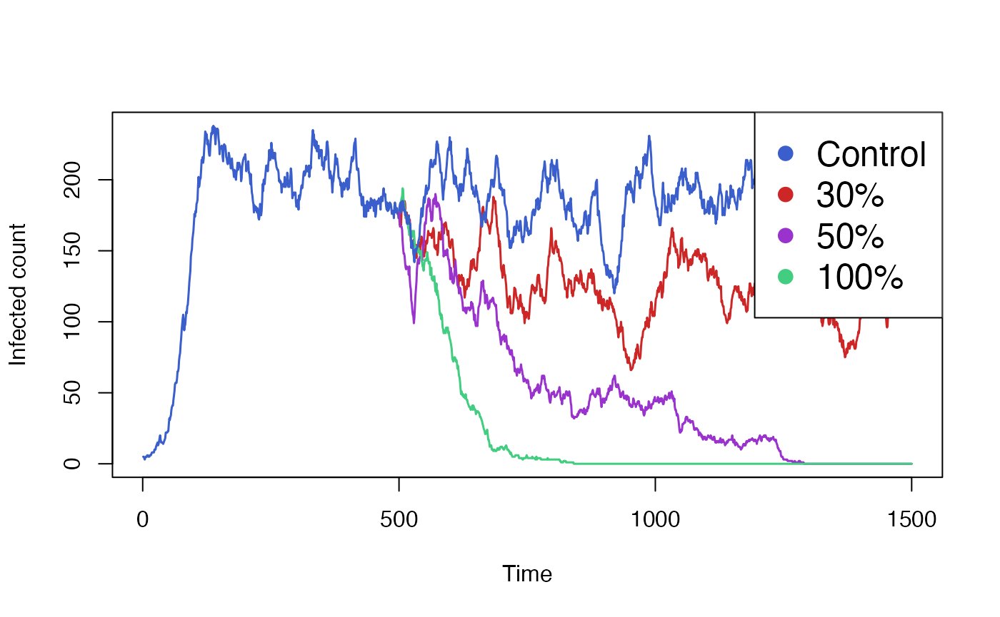
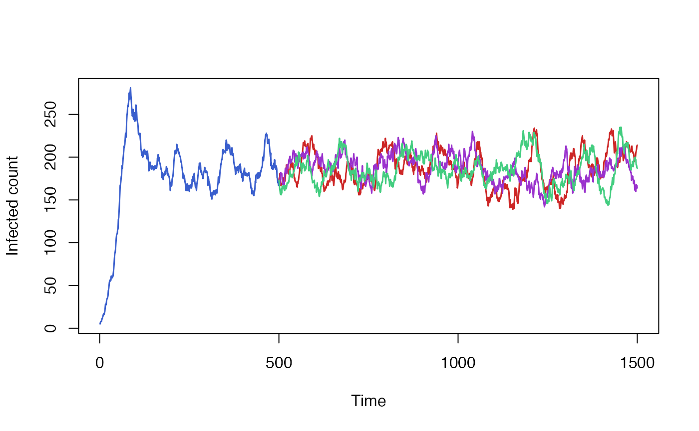

Introduction
When modeling the impact of an intervention on a disease, it is common to have a first simulation phase where the intervention is disabled to achieve steady-state, followed by a second phase during which the intervention is applied. Often, we want to run the second phase many times over, varying the intervention parameters. Simulating the first phase every time is unnecessary and wasteful, since it isn’t affected by the intervention parameters.
Individual allows the user to run a simulation for a number of time steps, save the state of the simulation and resume it multiple times, with different parameters each time. This way, the initial phase before the intervention only needs to be simulated once.
Usage
The typical way to use this feature is to define a simulation
function which creates all the relevant simulation data and then calls
simulation_loop. The function we define takes in an
optional state parameter that is passed through to
simulation_loop.
run_simulation <- function(timesteps, state=NULL) {
health <- CategoricalVariable$new(c("S", "I"), rep("S", 10))
process <- bernoulli_process(health, "S", "I", 0.01)
simulation_loop(
variables=list(health),
processes=list(process),
timesteps=timesteps,
state=state)
}The simulation can be run a first time, for a given number of steps. It returns a state object, which captures the internal state of all variables and events, the state of the random number generator and the number of time steps that were simulated.
state <- run_simulation(timesteps = 50)Finally, the simulation is resumed with a larger number of time
steps, passing in the state object as an argument. The
timesteps argument refers to the total number of time
steps, including both the original simulation run and the new one. In
this case, run_simulation will only simulate 50 extra
steps. Before running the actual simulation,
simulation_loop will reload the simulation state from its
argument, overwriting any values we had set when initializing the
variables.
run_simulation(timesteps = 100, state=state)Practical example
To demonstrate the checkpoint and restore functionality of individual in a practical setting, we will use a SIRS model with a vaccination intervention. Our aim is to compare the impact of the vaccination campaign, given different vaccine efficacy scenarios.
Individuals in the simulation move from being susceptible (S) to
infectious (I) to recovered (R) and back to susceptible, after their
natural immunity wanes off. Out of the entire population N,
only I0 individuals are initially infectios, and the rest
are susceptible. Orthogonally, an individual can either be vaccinated
(Y) or not (N). The vaccination and the immunity it confers never wanes
off. All individuals are initially unvaccinated.
make_variables <- function(N, I0) {
health_states_t0 <- rep("S",N)
health_states_t0[sample.int(n = N,size = I0)] <- "I"
health <- CategoricalVariable$new(categories = c("S","I","R"), initial_values = health_states_t0)
vaccinated <- CategoricalVariable$new(categories = c("Y", "N"), initial_values = rep("N", N))
list(health=health, vaccinated=vaccinated)
}A vaccinated individual has a reduced probability of becoming infectious, as determined by the vaccine’s efficacy. The function below creates the process to model infection. It samples from the susceptible compartments, applying the different rates depending on the whether an individual’s vaccinated status.
make_infection_process <- function(health, vaccinated, N, beta, vaccine_efficacy) {
function(t) {
I <- health$get_size_of("I")
foi <- beta * I / N
vaccinated_S <- health$get_index_of("S")$and(vaccinated$get_index_of("Y"))
non_vaccinated_S <- health$get_index_of("S")$and(vaccinated$get_index_of("N"))
vaccinated_S$sample(rate = foi * (1 - vaccine_efficacy))
non_vaccinated_S$sample(rate = foi)
health$queue_update(value = "I", index = vaccinated_S)
health$queue_update(value = "I", index = non_vaccinated_S)
}
}For a while at the start of the simulation no vaccination takes
place. Only after a number of time steps, determined by the
vaccination_start parameter, does the intervention begin.
Periodically, an event will fire and every individual has a fixed
probability of becoming vaccinated. If vaccination_start is
NULL, the intervention never begins.
make_vaccination_event <- function(vaccinated, vaccination_start, vaccination_interval, vaccination_rate) {
e <- Event$new()
e$add_listener(function(t) {
vaccinated$queue_update(value = "Y",
vaccinated$get_index_of("N")$sample(vaccination_rate))
e$schedule(vaccination_interval)
})
if (!is.null(vaccination_start)) {
e$schedule(vaccination_start - 1)
}
e
}We will define our simulation as a function, taking the simulation
parameters as arguments. Any additional arguments to the function, as
denoted by ..., will be passed on to
simulation_loop. This will allow us to pass the
state argument in. The function returns the simulation data
as well as the new saved state.
run_simulation <- function(
steps,
N = 1e3,
I0 = 5,
beta = 0.1, # S -> I
gamma = 0.05, # I -> R
xi = 0.03, # R -> S
vaccination_start = NULL,
vaccination_interval = 10,
vaccination_rate = 0.05, # N -> Y
vaccine_efficacy = 1,
...)
{
variables <- make_variables(N, I0)
infection_process <- make_infection_process(
variables$health,
variables$vaccinated,
N, beta, vaccine_efficacy)
recovery_process <- bernoulli_process(variables$health, "I", "R", gamma)
return_process <- bernoulli_process(variables$health, "R", "S", xi)
vaccination_event <- make_vaccination_event(
variables$vaccinated, vaccination_start, vaccination_interval, vaccination_rate)
renderer <- Render$new(timesteps = steps)
health_render_process <- categorical_count_renderer_process(
renderer = renderer,
variable = variables$health,
categories = variables$health$get_categories()
)
processes <- list(
infection_process,
recovery_process,
return_process,
health_render_process)
final_state <- simulation_loop(
variables = variables,
events = list(vaccination_event),
processes = processes,
timesteps = steps,
...)
list(result=renderer$to_dataframe(), state=final_state)
}We will start by running and plotting our baseline simulation, with the intervention disabled.
data <- run_simulation(steps=1500)$result
colours <- c("royalblue3","firebrick3","darkorchid3")
matplot(
x=data["timestep"],
y=data[c("S_count","I_count", "R_count")],
xlab="Time", ylab="Count",
type="l", lwd=2, lty = 1, col = colours
)
legend(
x = "topright",
pch = rep(16,3),
col = colours,
legend = c("S", "I", "R"), cex = 1.5,
bg='white'
)
We see that the simulation takes some time to settle from its initial
parameters to its steady-state conditions. We will now enable the
vaccine intervention, but only starting at a point after the simulation
has settled, for example at t=500.
data <- run_simulation(steps=1500, vaccination_start = 500, vaccine_efficacy = 1)$result
colours <- c("royalblue3","firebrick3","darkorchid3")
matplot(
x=data["timestep"],
y=data[c("S_count","I_count", "R_count")],
xlab="Time", ylab="Count",
type="l", lwd=2, lty = 1, col = colours
)
legend(
x = "topright",
pch = rep(16,3),
col = colours,
legend = c("S", "I", "R"), cex = 1.5,
bg='white'
)
The simulation above clearly shows the effect of the vaccination
campaign, starting at t=500. However, it made the
optimistic assumption of a 100% vaccine efficacy. We wish to run the
simulation again but with varying levels of efficacy, in order the
compare its impact.
While we could run the code above many times over, each simulation
would repeat the first 499 timesteps, despite the result being identical
each time. Instead we start by running only these timesteps, and saving
the result. We do need to specify the start of the intervention, as it
is necessary to schedule the first vaccination event. However the
details of the intervention (ie. vaccine_efficacy) are
irrelevant and can be omitted.
initial <- run_simulation(steps=499, vaccination_start = 500)From this initial result, we can resume the simulation, but using different values of vaccine efficacy each time. We also include a control simulation, in which no vaccination takes place. Each of these simulation will skip the first 499 steps and only run the next 1001 time steps.
control <- run_simulation(steps=1500, vaccination_start = 500, vaccine_efficacy=0.0, state=initial$state)
vaccine30 <- run_simulation(steps=1500, vaccination_start = 500, vaccine_efficacy=0.3, state=initial$state)
vaccine50 <- run_simulation(steps=1500, vaccination_start = 500, vaccine_efficacy=0.5, state=initial$state)
vaccine100 <- run_simulation(steps=1500, vaccination_start = 500, vaccine_efficacy=1.0, state=initial$state)Finally we aggregate and plot the results from all these simulations. We also need to include the data from our initial run, which we will plot the same colour as our control simulation.
colours <- c("royalblue3","firebrick3","darkorchid3", "seagreen3")
# Pad initial out to ensure it has the same shape as other series.
initial$result[500:1500,] <- NA
matplot(
data.frame(
initial$result[,"I_count"],
vaccine30$result[,"I_count"],
vaccine50$result[,"I_count"],
vaccine100$result[,"I_count"],
control$result[,"I_count"]),
xlab = "Time", ylab = "Infected count",
type = "l", lwd = 1.5, lty = 1, col = colours,
)
legend(
x = "topright", pch = rep(16,3),
col = colours,
legend = c("Control", "30%", "50%", "100%"), cex = 1.5,
bg='white'
)
Caveats
Saving and restoring the simulation state comes with a number of caveats.
- All simulation state must be represented as objects managed by individual. Any state maintained externally will not be saved nor restored.
- The state object’s structure is not stable and is expected to change. One should not expect to serialize the state to disk and have it work with future versions of the individual package.
- The simulation must be re-created in an identical way. Variables and
events may not be added or removed, variable sizes must remain constant,
the list of categories in a
CategoricalVariablecannot be modified, etc. The order of variables and events passed to therun_simulationfunction must remain stable. - If an event is scheduled before the checkpoint, the time at which it
will execute cannot be changed when resuming, even if that time is in
the future. For example in the SIRS model above, we would not be able to
resume the simulation with different values for
vaccination_start; changing that parameter would have no effect.
While parameters of the simulation can be changed between the initial
run and the subsequent runs (as demonstrated with the
vaccine_efficacy parameter above), in general you should
not modify parameters that would have been already had an impact on the
first part of the simulation. Doing so would produce results that can
only be produced through checkpoint and resume, and not as a single
simulation.
For example, in our SIRS model, it may be tempting to model a time-varying parameter by running half of the simulation with one value and then resuming it with a different value. While this would probably work, it would be brittle and hard to compose. As more time-varying parameters are introduced to the model, the simulation would need to be saved and restored each time a value changes.
Restoring random number generator state
By default resuming a simulation does not restore R’s random number generator’s state. Every resumed run from the same saved state will be independent and, if the model is stochastic, will produce different results.
We can demonstrate that by running the baseline of our SIRS model multiple times and plotting the results. All three runs start off from the same state, inherited from our original model run, but quickly diverge based on the outcome of random draws.
initial <- run_simulation(steps=499)
run1 <- run_simulation(steps = 1500, state = initial$state)
run2 <- run_simulation(steps = 1500, state = initial$state)
run3 <- run_simulation(steps = 1500, state = initial$state)
initial$result[500:1500,] <- NA
matplot(
data.frame(
initial$result[,"I_count"],
run1$result[,"I_count"],
run2$result[,"I_count"],
run3$result[,"I_count"]),
xlab = "Time", ylab = "Infected count",
type = "l", lwd = 1.5, lty = 1, col = colours
)
Sometimes this behaviour may not be desirable, and we would instead like to restore the state of the random number generator exactly where it was when we stopped the first part of the run. One example of this is when checking that our model behaves the same whether or not it was saved and resumed.
The code below show an attempt at running the model twice, once as a continous run and once in a piecewise manner. We would hope that seeding the random generator at the start of the simulation would be enough to get identical results out of it. Unfortunately we don’t, because the random number generator state’s at the intermediate point isn’t being preserved.
set.seed(123)
uninterrupted_run <- run_simulation(steps = 1500)$result
set.seed(123)
piecewise_run_initial <- run_simulation(steps = 499)
piecewise_run_final <- run_simulation(steps = 1500, state = piecewise_run_initial$state)
piecewise_run <- rbind(piecewise_run_initial$result, piecewise_run_final$result[500:1500,])
all.equal(uninterrupted_run, piecewise_run)
#> [1] "Component \"S_count\": Mean relative difference: 0.1454073"
#> [2] "Component \"I_count\": Mean relative difference: 0.6820171"
#> [3] "Component \"R_count\": Mean relative difference: 0.625746"We can try the same again, but this time set
restore_random_state = TRUE to enable restoring the
simulation state. This time we’ve successfully managed to reproduce the
data from our uninterrupted run.
set.seed(123)
piecewise_run_initial <- run_simulation(steps = 499)
piecewise_run_final <- run_simulation(steps = 1500, state = piecewise_run_initial$state, restore_random_state = TRUE)
piecewise_run <- rbind(piecewise_run_initial$result, piecewise_run_final$result[500:1500,])
all.equal(uninterrupted_run, piecewise_run)
#> [1] "Component \"S_count\": Mean relative difference: 0.05500226"
#> [2] "Component \"I_count\": Mean relative difference: 0.2852969"
#> [3] "Component \"R_count\": Mean relative difference: 0.274895"Using restore_random_state = TRUE resets the global
random number generator’s state, which could have surprising and
undesirable side effects. It is generally useful in tests, but should be
used carefully elsewhere.
set.seed(123)
print(.GlobalEnv$.Random.seed)
#> [1] 10403 624 -983674937 643431772 1162448557 -959247990
#> [7] -133913213 2107846888 370274761 -2022780170 -412390145 848182068
#> [13] -266662747 -1309507294 1356997179 1661823040 1749531457 -516669426
#> [19] 1042678071 -1279933428 -410084963 1151007674 -895613453 1288379032
#> [25] -376044615 -1358274522 307686511 101447652 1796216213 -1567696558
#> [31] 1186934955 -1925339152 -472470735 80319294 -1524429145 326645436
#> [37] -389586803 -400786966 -890731933 -852332472 1365217705 -1785317034
#> [43] -1551153185 1359863956 2098748037 -1013039742 -329721061 -1587358816
#> [49] 344102689 -1520389522 166492183 1821136236 1646453629 1056605210
#> [55] -1419044141 -806080008 520985497 711286406 2004844367 -1445006012
#> [61] 1329781621 -1188844110 -1089068661 1173875536 -1983217903 514629022
#> [67] -237421177 -258138084 -930078099 261626442 1349308227 -1125425240
#> [73] -1677778551 25874358 409637567 -1987430924 1583257701 -136173086
#> [79] 639501307 272101120 -1024630015 -1994369842 -939499785 -1944742196
#> [85] -591520419 -1994900358 1072996275 1119025496 2035491705 -2082894618
#> [91] 776176175 -69557596 1794806101 -178474478 -497581461 874372784
#> [97] 518669041 -370223106 1295572071 -1776240260 -1692674995 1935534762
#> [103] 298421283 111542024 -1075273367 518297110 -289321569 1331379028
#> [109] 1768277573 1473660482 2120850651 879016544 -864018719 1661675310
#> [115] 135902679 -2136373204 735594301 1594631386 -546138989 1423929528
#> [121] -1067541671 1962863430 -1923418865 -984154108 1907308341 642901618
#> [127] -1095019701 -1836613104 -1171392815 1663582814 -1258689721 -2007301412
#> [133] -756910547 -712643830 -1271482109 -801485208 51646793 -1925477258
#> [139] -1421379457 1104736436 -1348082651 -124611934 292791739 2126591424
#> [145] -2043491647 -709285490 -1242530633 1688217996 -538353379 -1997652678
#> [151] -48432781 575772696 942146361 57506214 -948054033 -72610460
#> [157] 1389939989 656100050 -25586645 -2012424848 1854773937 1391516862
#> [163] -2100008409 -140248004 -1638135795 -2077746326 -118729245 -1417654840
#> [169] 662270249 942125782 -1363864737 744183316 2123821573 -80802046
#> [175] -1753997669 1277518112 1090348705 1338137582 423408535 -28214548
#> [181] 1164536573 1524008346 673959507 853634936 -1599644903 -2135083002
#> [187] -345756977 -1070478652 971985653 -556736718 -406174453 663083216
#> [193] 1258368657 1306568478 1820350727 -1068259940 -402617875 1499233226
#> [199] -1121819965 -1773142744 1796260105 1463879990 901914175 104491892
#> [205] 1605431269 -1933329566 1688405883 -446088064 1238889089 197049934
#> [211] -709469577 -1072333748 1691378909 -1260585478 198644531 2053568216
#> [217] 903127801 -1970919834 -473567825 1614821412 -1905604395 1082827666
#> [223] 1558537707 1875545136 1518383729 -1265655426 -2085242905 1791098620
#> [229] 1447558093 -1153758166 -99557469 -92185464 -2016280343 1847562134
#> [235] 1495701791 -221368108 409722309 -429353022 1765302363 2137311200
#> [241] -373658015 273043630 -350916265 -935055956 43404989 52012634
#> [247] 1867958291 1488596536 -1347953959 174081222 2002460815 1429165444
#> [253] -205312331 1264621554 -603785525 1270017936 -1543231919 -1282028578
#> [259] 908887751 726075484 1269456301 -1680094070 -990917501 -1377014808
#> [265] -1279971127 1281050102 228230143 1097770548 -1438663771 1295361058
#> [271] 829172027 988808000 1704778305 804328206 -1257113545 -516583668
#> [277] -1624037219 1034190522 904064243 -1716316776 1108935353 904106790
#> [283] 1222361967 1146561252 1232110741 174767186 2136668075 -1843985680
#> [289] 713263665 1133192766 1302119847 -499465796 -425742451 2035727594
#> [295] 1324820835 -227988664 -1598926679 227290198 601218783 1836305300
#> [301] 1386514821 306372738 -445226469 618852000 -25741791 156697966
#> [307] -345772265 -2126405524 1998516861 -392853734 1588822483 1965665528
#> [313] -1658840423 -1901588090 -687876529 -15753148 -1427453323 -1799286606
#> [319] -47880053 97437264 -319365615 688369822 -272731001 469052188
#> [325] 27259245 1573117258 -446761405 1976539816 2093047945 424297142
#> [331] 1217440191 506831092 -1961736347 -1834464030 1234111227 907381248
#> [337] -247365119 118499278 -1581033993 -893361716 -2100188067 335855482
#> [343] 83920563 -1896483752 -323673479 -498745370 2088720687 -2102342236
#> [349] 1873412181 226202898 -1483060885 1437743536 -430562831 -190616834
#> [355] -1639345305 281953404 857940813 -549769814 -245419229 1375189512
#> [361] -237346711 590186774 75687071 655107668 151057733 930998594
#> [367] -1108466725 1398789472 1995685345 1605663278 1206398167 -1945513172
#> [373] 1992513085 1544169434 1610742675 -152048712 -657450407 1247059526
#> [379] 1880247311 -124605692 723920437 -1548596878 1827773003 479812880
#> [385] 228152785 49698142 922100295 -1524757028 -845069011 534031882
#> [391] -131080189 213485928 636833865 718143350 -1134260353 -2024842316
#> [397] -1108831451 1977333154 1053535419 1301926080 -997856831 366738574
#> [403] -1450544201 1064694924 -1016336355 -390217670 -1024466829 686789400
#> [409] -2056715719 745319590 -999248145 -1240647580 -1395180523 -1837290030
#> [415] -681354453 -514051984 1438153137 2090364862 -209968857 1765574460
#> [421] -544057587 -844603798 -1693909789 -1746073400 -1156960215 2076419542
#> [427] -1326601633 1784103188 -683597563 -824593918 1683989915 -509903840
#> [433] 183502241 -132206866 -295556457 190629356 -1790739971 1849133210
#> [439] -1660799661 214755960 -1837639143 975563526 1750237647 1014527428
#> [445] 3490293 552878642 220695563 382907344 -1381266031 1445050910
#> [451] 1771278343 -1719553892 862869741 583941834 -1759344189 1365915688
#> [457] -820969463 -1381598154 -19516097 662427252 -1098735899 -812655006
#> [463] 1658982011 -1203972224 1999245697 -1592487602 -1708699273 -1038727348
#> [469] -725486627 747602170 2037447219 -161484328 469017081 1897421158
#> [475] 644859055 959210276 1824012245 -1573943662 -797561621 466937648
#> [481] 6984049 1344943230 -1963692313 507873788 1336756941 -446804182
#> [487] -978024797 50927496 -66994199 -1542552938 -1630130145 1108679636
#> [493] 421858501 286669506 176875355 1716904672 841747809 2002101166
#> [499] -1936594857 -503678804 643784125 -270685862 -9162989 -1518294728
#> [505] -1177069095 450623430 -1518307441 -2055143292 1977097653 1967586034
#> [511] 2139569611 993708688 887981393 -146153762 -1521041977 -1948249252
#> [517] 1992764589 1735430026 469169027 -492722456 1473540041 -1902921482
#> [523] 1705351935 1769673012 -929011035 948225826 -946720709 1824431680
#> [529] 1626208577 -1384520178 22671159 -1788782068 -359417955 272236986
#> [535] -230435853 1174868120 -2145910343 -855063002 1748802159 651054564
#> [541] -619908203 89300818 345161387 -1411621392 774662449 -1541883586
#> [547] 1651670183 581520572 -1489764723 -2028142614 -1423847325 -1844713912
#> [553] 1954615209 -389144746 66876895 2030417556 -361973627 -151813246
#> [559] -1573918437 944703904 610784545 1108957294 -1875417577 -1297945748
#> [565] 1037500797 1908181530 823650515 1875585016 -22111847 1765196934
#> [571] -849597105 1315720004 -1748059787 -915770446 634433419 -1869504176
#> [577] -887145199 2066662302 -939545721 -822528484 -1687437203 -1367629750
#> [583] -1603461821 522180008 1610588041 2052437430 110280895 2014120948
#> [589] -670960027 159018978 1050415611 568272128 -1718509311 -3409202
#> [595] 753028343 -1139331892 -123651235 -2072165766 -1222087245 648343384
#> [601] 1100161401 486404838 261566511 1504901284 -476745899 1151760402
#> [607] -445050773 -130902864 -423755535 1831075326 934693479 690474876
#> [613] -907644339 -744197974 1158732323 62223624 -1538777239 1455586326
#> [619] -702514273 -1712778924 651699269 959548482 -586241317 1850142816
#> [625] -647799583 2099891502
print(runif(5))
#> [1] 0.2875775 0.7883051 0.4089769 0.8830174 0.9404673